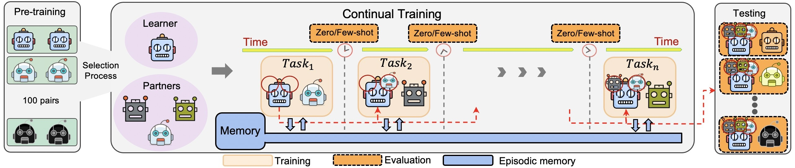
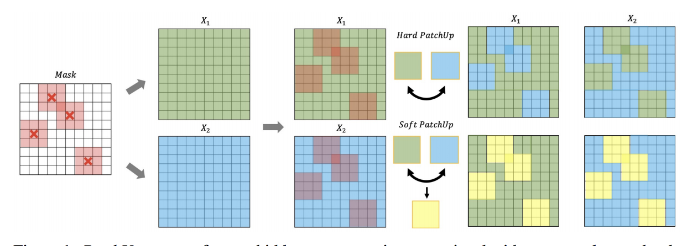
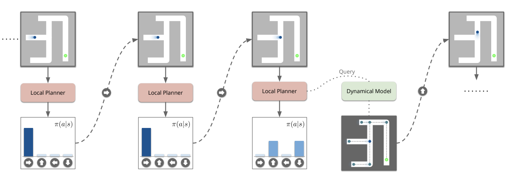
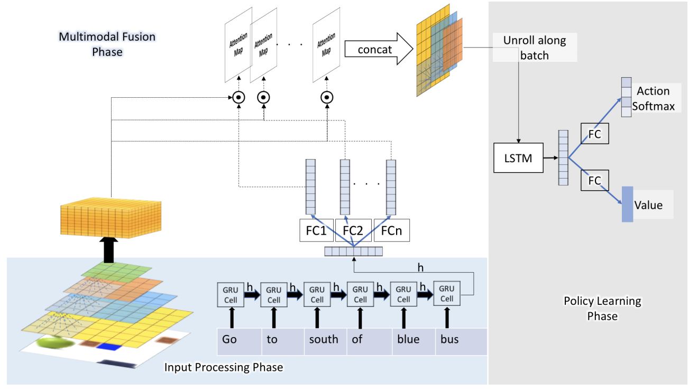

|
Akilesh Badrinaaraayanan
I am a Ph.D. student at CMU Tepper School of Business with focus on Information Systems and Marketing. I recently graduated with a M.Sc. by research in Machine Learning from Université de Montréal and Mila - Quebec AI Institute, where I worked on reinforcement learning and lifelong learning supervised by Prof. Aaron Courville and Prof. Sarath Chandar. Before joining Mila, I worked as a MTS at Adobe Systems, India wherein I worked on both fundamental and applied ML problems. Previously, I did my undergrad in computer science from IIT-Hyderabad where I worked with Prof. Vineeth Balasubramanian on some interesting computer vision problems. During my undergrad, I also spent time at Bosch as a research intern working on diabetic retinopathy detection. I have also dabbled with other areas of computer science during my undergrad. I have been extremely fortunate to have some of the best mentors and collaborators in my career thus far.
Email /
CV /
Google Scholar /
Twitter /
Github
|
|
|
Research
I'm interested in machine learning, reinforcement learning, lifelong learning and computer vision.
|
|

|
Continuous Coordination As a Realistic Scenario for Lifelong Learning
Akilesh Badrinaaraayanan
Hadi Nekoei ,
Aaron Courville,
Sarath Chandar,
ICML, 2021 , ICLR NERL workshop, 2021 spotlight
Code
Propose a new benchmark for lifelong RL based on Hanabi as well as introduce lifelong learning as a step to think beyond the centralized-training paradigm in MARL.
|
|

|
PatchUp: A Regularization Technique for Convolutional Neural Networks
Mojtaba Faramarzi,
Mohammad Amini,
Akilesh Badrinaaraayanan ,
Vikas Verma,
Sarath Chandar
arXiv, 2020
Code
Novel regularization technique with better empirical performance and robustness than most existing regularization methods across several datasets/architectures.
|
|

|
Towards Jumpy Planning
Akilesh Badrinaaraayanan ,
Suriya Singh,
Anirudh Goyal,
Alexander Neitz,
Aaron Courville
ICML MBRL workshop, 2019 spotlight
Developed a model-based planner with a goal-conditioned policy trained with model-free learning, i.e. dynamical models that jump between decision states.
|
|

|
Attention Based Natural Language Grounding By Navigating Virtual Environment
Akilesh Badrinaaraayanan ,
Abhishek Sinha,
Mausoom Sarkar,
Balaji Krishnamurthy.
WACV, 2019, NeurIPS ViGIL workshop, 2017.
Code
Language grounding in 2D/3D environments through multimodal fusion of visual and textual features.
|
|
{kind=link}